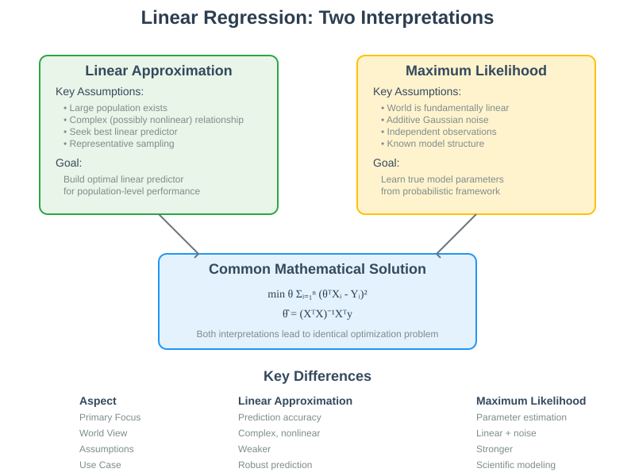
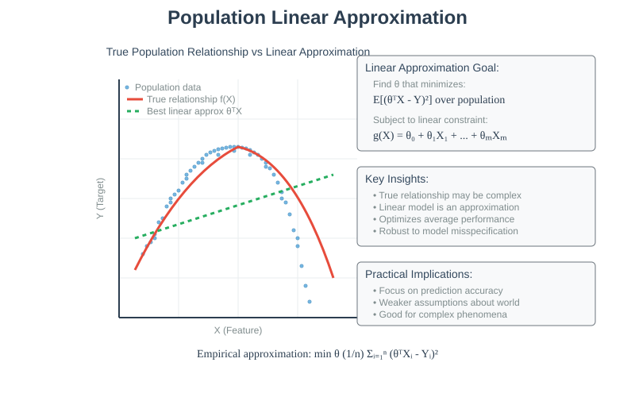
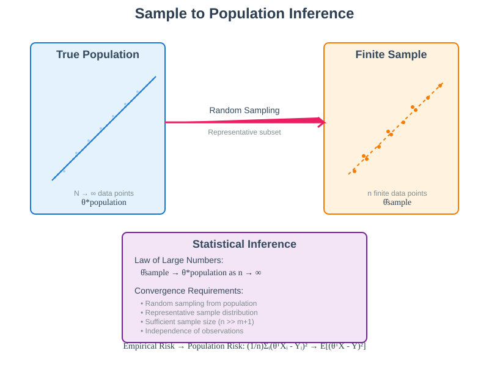
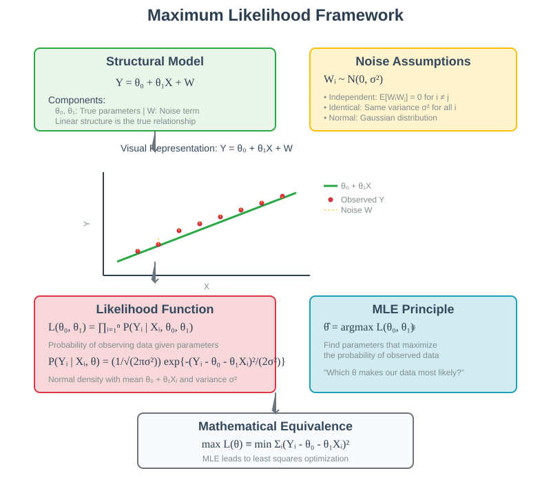
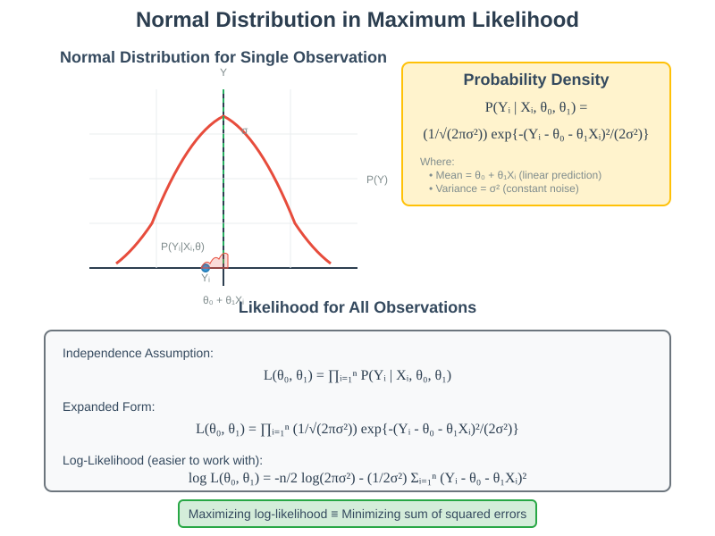
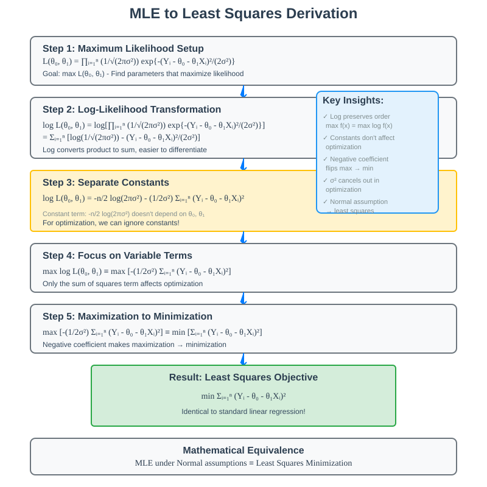

Linear Regression: Interpretation and Justification
Quick Navigation
- Course Overview
- Linear Approximation Interpretation
- Population vs Sample Analysis
- Maximum Likelihood Estimation
- Probabilistic Model Framework
- Mathematical Derivation
- Interpretation Comparison
- Practical Applications
- Try It Yourself
- References & Further Reading
Course Overview
Linear regression can be understood through multiple theoretical lenses, each providing unique insights into why the method works and when it should be applied. This comprehensive guide explores two fundamental interpretations: the linear approximation approach for complex nonlinear relationships, and the maximum likelihood estimation framework for probabilistic modeling.
Understanding these interpretations is crucial for practitioners to make informed decisions about when to use linear regression, how to interpret results, and what assumptions underlie their models. The mathematical formulations lead to identical solutions, but the underlying assumptions and interpretational frameworks differ significantly.

Linear Approximation Interpretation
🔵 The Population-Based Approach
The first interpretation frames linear regression as finding the best linear approximation to an underlying, potentially complex nonlinear relationship within a large population. This approach acknowledges that real-world phenomena often exhibit nonlinear patterns but seeks the optimal linear predictor for practical and computational advantages.
Core Assumptions
- Large underlying population: A vast collection of individuals exists with feature-target relationships
- Complex true relationship: The actual relationship between features and targets may be highly nonlinear
- Linear constraint choice: We deliberately restrict ourselves to linear predictors for simplicity and robustness
- Representative sampling: Our finite dataset represents a random sample from the larger population

Mathematical Framework
For a population with true relationship f(X), we seek the linear function g(X) = θᵀX that minimizes:
Population Risk = E[(g(X) - Y)²]
Where the expectation is taken over the entire population distribution. Since we cannot access the full population, we approximate this with empirical risk:
Empirical Risk = (1/n) Σᵢ₌₁ⁿ (θᵀXᵢ - Yᵢ)²
Convergence Properties
As sample size n approaches infinity, the empirical risk converges to the population risk, ensuring that our linear approximation becomes increasingly accurate for the true population relationship. This convergence requires:
- Random sampling: Each data point is independently drawn from the population
- Representative samples: The sample distribution matches the population distribution
- Sufficient sample size: Large n provides better approximation guarantees
Population vs Sample Analysis
🟢 Sample-to-Population Inference
The linear approximation interpretation emphasizes the relationship between finite sample analysis and population-level conclusions. Our goal is to construct a linear predictor that performs well on the broader population, not just the training data.

Key Insights
Finite Sample Limitations
- The linear fit on finite data may not exactly match the optimal population linear predictor
- Sample-specific noise and outliers can affect the learned parameters
- Smaller samples introduce more variability in parameter estimates
Asymptotic Guarantees
- As sample size increases, the sample-based linear predictor approaches the population optimum
- Law of Large Numbers ensures convergence of empirical risk to true risk
- Central Limit Theorem provides confidence intervals for parameter estimates
Practical Implications
Sampling Strategy
- Random sampling: Ensures unbiased population representation
- Stratified sampling: Maintains important subgroup proportions
- Cluster sampling: Practical for large-scale population studies
Sample Size Considerations
- Larger samples provide more stable parameter estimates
- Minimum sample size should exceed the number of parameters (n > m+1)
- Power analysis helps determine adequate sample sizes for desired precision
Maximum Likelihood Estimation
🔴 The Probabilistic Modeling Approach
The second interpretation assumes that the world is fundamentally described by a linear relationship with additive noise. This stronger assumption enables powerful statistical inference techniques and provides theoretical guarantees about parameter recovery.
Structural Model Assumption
For one-dimensional X, we assume the true generative model:
Y = θ₀ + θ₁X + W
Where: - θ₀, θ₁ are true population parameters - W represents independent noise terms - The linear structure is the true underlying relationship

Noise Distribution Assumptions
The maximum likelihood approach requires specific assumptions about the noise term W:
Independence
Each noise term Wᵢ is independent of all others:
P(W₁, W₂, ..., Wₙ) = P(W₁) × P(W₂) × ... × P(Wₙ)
Identical Distribution
All noise terms follow the same distribution:
Wᵢ ~ N(0, σ²) for all i
Normality
The noise follows a normal (Gaussian) distribution with zero mean and constant variance σ².
Probabilistic Model Framework
🟡 Likelihood Function Construction
Under the probabilistic model assumptions, each observation Yᵢ follows a normal distribution:
Yᵢ ~ N(θ₀ + θ₁Xᵢ, σ²)
The likelihood function represents the probability of observing our data given specific parameter values:
L(θ₀, θ₁) = ∏ᵢ₌₁ⁿ P(Yᵢ | Xᵢ, θ₀, θ₁)
Normal Density Formula
The probability density for each observation is:
P(Yᵢ | Xᵢ, θ₀, θ₁) = (1/√(2πσ²)) exp{-(Yᵢ - θ₀ - θ₁Xᵢ)²/(2σ²)}

Maximum Likelihood Principle
The maximum likelihood estimator chooses parameters that maximize the probability of observing the actual data:
θ̂ = argmax θ L(θ₀, θ₁)
This principle asks: "Which parameter values make our observed data most likely to have occurred?"
Log-Likelihood Simplification
Maximizing the likelihood is equivalent to maximizing the log-likelihood:
log L(θ₀, θ₁) = Σᵢ₌₁ⁿ log P(Yᵢ | Xᵢ, θ₀, θ₁)
This converts products to sums, simplifying mathematical analysis and numerical computation.
Mathematical Derivation
🟠 From Likelihood to Least Squares
The maximum likelihood estimation under normal noise assumptions leads directly to the familiar least squares objective function.
Step-by-Step Derivation
Step 1: Log-Likelihood Expansion
log L(θ₀, θ₁) = Σᵢ₌₁ⁿ [log(1/√(2πσ²)) - (Yᵢ - θ₀ - θ₁Xᵢ)²/(2σ²)]
Step 2: Constant Term Removal
The terms not involving θ can be ignored for optimization:
log L(θ₀, θ₁) ∝ -Σᵢ₌₁ⁿ (Yᵢ - θ₀ - θ₁Xᵢ)²
Step 3: Maximization to Minimization
Maximizing the log-likelihood is equivalent to minimizing:
Σᵢ₌₁ⁿ (Yᵢ - θ₀ - θ₁Xᵢ)²
Step 4: Recognition of Least Squares
This is exactly the sum of squared residuals objective in linear regression!

Theoretical Guarantees
Maximum likelihood estimation provides several important theoretical properties:
Consistency
As sample size increases, the MLE converges to the true parameter values:
θ̂ₙ → θ* as n → ∞
Asymptotic Normality
For large samples, the parameter estimates follow a normal distribution around the true values.
Efficiency
MLE achieves the lowest possible variance among unbiased estimators (Cramér-Rao bound).
Interpretation Comparison
🔵 Contrasting Philosophical Approaches
The two interpretations of linear regression represent fundamentally different philosophical approaches to modeling and statistical inference.
| Aspect | Linear Approximation | Maximum Likelihood |
|---|---|---|
| Primary Goal | Build best linear predictor | Learn true model parameters |
| World Assumption | Complex, possibly nonlinear | Fundamentally linear + noise |
| Noise Treatment | Implicit in approximation error | Explicit probabilistic model |
| Parameter Interpretation | Optimal linear coefficients | True population parameters |
| Theoretical Foundation | Empirical risk minimization | Statistical inference theory |
| Robustness | More robust to model misspecification | Requires strict assumptions |

🟢 When to Use Each Interpretation
Linear Approximation Approach
Best for: - Prediction-focused tasks: When the primary goal is accurate forecasting - Complex relationships: When true relationships are likely nonlinear - Robust modeling: When you want to avoid strong distributional assumptions - Large-scale applications: When computational efficiency is paramount
Example Applications: - Housing price prediction with multiple features - Marketing response modeling with interaction effects - Financial risk assessment with diverse indicators
Maximum Likelihood Approach
Best for: - Scientific modeling: When understanding causal relationships is important - Parameter inference: When coefficient interpretation is crucial - Hypothesis testing: When statistical significance testing is required - Uncertainty quantification: When confidence intervals are needed
Example Applications: - Medical dose-response relationships - Economic policy impact analysis - Engineering parameter estimation
🔴 Mathematical Equivalence
Despite different philosophical foundations, both interpretations lead to identical optimization problems:
min θ Σᵢ₌₁ⁿ (θᵀXᵢ - Yᵢ)²
This convergence demonstrates the mathematical elegance of linear regression while highlighting the importance of choosing the appropriate interpretational framework for specific applications.
Practical Applications
🟢 Implementation Considerations
Understanding the theoretical foundations helps guide practical implementation decisions and result interpretation.
Model Validation Strategies
For Linear Approximation Interpretation: - Cross-validation for generalization assessment - Out-of-sample prediction accuracy - Robustness testing across different populations
For Maximum Likelihood Interpretation: - Residual analysis for normality assumptions - Homoscedasticity testing - Independence verification
Parameter Interpretation Guidelines
Linear Approximation Context: - Coefficients represent optimal linear weights - Focus on prediction accuracy metrics - Compare against nonlinear alternatives
Maximum Likelihood Context: - Coefficients estimate true causal effects - Include confidence intervals and p-values - Test model assumptions rigorously
👉 Try It Yourself

import numpy as np
import matplotlib.pyplot as plt
from sklearn.linear_model import LinearRegression
from scipy import stats
# Linear Approximation Approach
def linear_approximation_demo():
# Generate nonlinear data
np.random.seed(42)
X = np.linspace(0, 10, 100).reshape(-1, 1)
y_true = 2 * np.sin(X.ravel()) + np.random.normal(0, 0.5, 100)
# Fit linear model as approximation
model = LinearRegression()
model.fit(X, y_true)
y_pred = model.predict(X)
print(f"Linear approximation R²: {model.score(X, y_true):.3f}")
return X, y_true, y_pred
# Maximum Likelihood Approach
def maximum_likelihood_demo():
# Generate linear data with known parameters
np.random.seed(42)
true_slope, true_intercept = 2.5, 1.0
X = np.random.uniform(0, 10, 100).reshape(-1, 1)
noise = np.random.normal(0, 1, 100)
y = true_intercept + true_slope * X.ravel() + noise
# Fit model and recover parameters
model = LinearRegression()
model.fit(X, y)
print(f"True parameters: slope={true_slope}, intercept={true_intercept}")
print(f"Estimated parameters: slope={model.coef_[0]:.3f}, intercept={model.intercept_:.3f}")
# Statistical inference
n = len(y)
mse = np.mean((y - model.predict(X))**2)
var_beta = mse / np.sum((X.ravel() - np.mean(X))**2)
se_beta = np.sqrt(var_beta)
print(f"Standard error of slope: {se_beta:.3f}")
print(f"95% CI for slope: [{model.coef_[0] - 1.96*se_beta:.3f}, {model.coef_[0] + 1.96*se_beta:.3f}]")
# Run demonstrations
linear_approximation_demo()
maximum_likelihood_demo()
Hugging Face Integration
Explore linear regression implementations and datasets: - Scikit-learn Linear Models - Regression Datasets Collection
Try It Yourself
🔧 Hands-On Exercises
Exercise 1: Linear Approximation Analysis

Objective: Compare linear approximations of different nonlinear functions - Generate data from polynomial, exponential, and sinusoidal functions - Fit linear models and evaluate approximation quality - Analyze how sample size affects approximation accuracy
Exercise 2: Maximum Likelihood Implementation

Objective: Implement MLE from scratch and verify against sklearn - Code the likelihood function for linear regression - Use optimization to find maximum likelihood parameters - Compare results with closed-form solution
Exercise 3: Assumption Testing

Objective: Test the assumptions underlying each interpretation - Generate data violating different assumptions - Apply diagnostic tests for normality, independence, and homoscedasticity - Compare model performance under assumption violations
Advanced Applications
Bayesian Linear Regression
Extend the maximum likelihood framework with prior distributions on parameters for uncertainty quantification.
Robust Linear Regression
Modify the linear approximation approach to handle outliers and non-Gaussian noise.
Regularized Regression
Incorporate Ridge and Lasso penalties within both interpretational frameworks.
References & Further Reading
📚 Foundational Resources
Statistical Theory
- Casella, G. & Berger, R.L. (2002): "Statistical Inference" - Comprehensive treatment of maximum likelihood theory
- Wasserman, L. (2004): "All of Statistics" - Modern perspective on statistical inference and approximation theory
- Hastie, T., Tibshirani, R., Friedman, J. (2009): "The Elements of Statistical Learning" - Machine learning perspective on linear methods
Maximum Likelihood Estimation
- Pawitan, Y. (2001): "In All Likelihood: Statistical Modelling and Inference Using Likelihood" - Detailed MLE methodology
- Cox, D.R. & Hinkley, D.V. (1974): "Theoretical Statistics" - Classical foundation of likelihood-based inference
Linear Model Theory
- Seber, G.A.F. & Lee, A.J. (2003): "Linear Regression Analysis" - Comprehensive mathematical treatment
- Montgomery, D.C., Peck, E.A., Vining, G.G. (2012): "Introduction to Linear Regression Analysis" - Applied perspective
Industry Documentation
- Scikit-learn Linear Models - Practical implementation guidance
- NumPy Statistical Functions - Computational tools for statistical analysis
- SciPy Statistical Tests - Assumption testing and model diagnostics
Research Applications
- Google AI Research: Statistical Machine Learning - Modern perspectives on classical methods
- Microsoft Research: Statistical Inference - Large-scale statistical computing
- Meta AI Research: Probabilistic Models - Contemporary probabilistic modeling approaches
Advanced Topics
- Bayesian Linear Regression: Prior distributions and posterior inference
- Robust Regression: M-estimators and resistance to outliers
- Generalized Linear Models: Extensions beyond Gaussian assumptions
- Causal Inference: Identifying causal effects in observational data